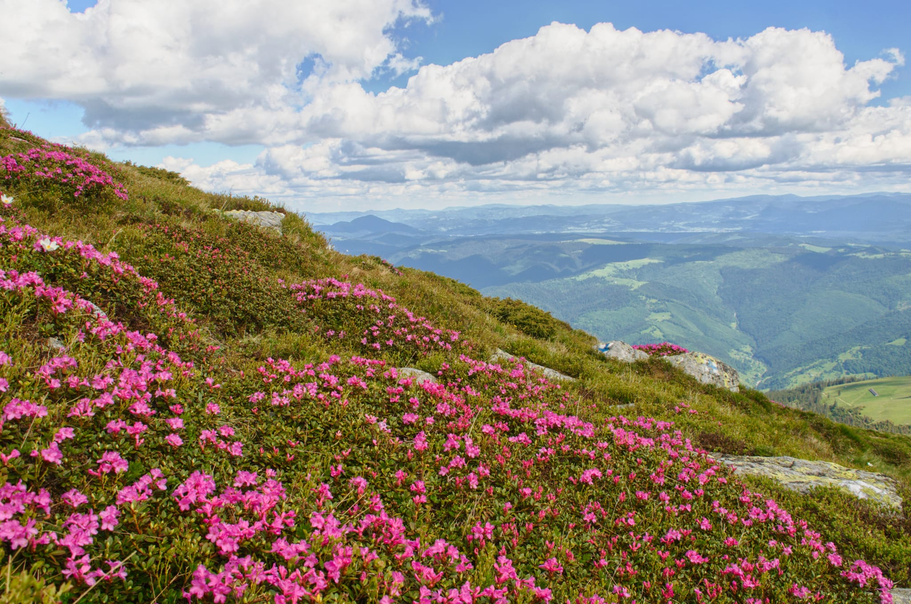
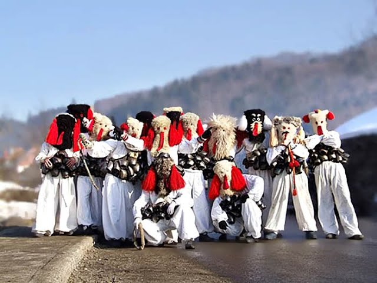

Despre noi
În Borșa, tradițiile și obiceiurile prilejuite de sfintele sărbători au rămas neschimbate de secole. Borșenii acordă o importanță deosebită pregătirilor pentru sărbători. Timpul este împărțit între lucrul casei și rugăciune. Cei care au ținut post merg la spovedanie, pentru a întâmpina aceste sărbători cu sufletul curățit de povara păcatelor lumești. Casele sunt văruite, încăperile aerisite, totul se spală, se împrospătează și se înfrumusețează. Grădinile și curțile au parte de aceeași atenție, astfel că spre sfârșitul postului curățenia se încheie și se trece la pregătirea bucatelor.

